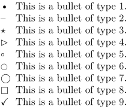
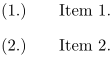
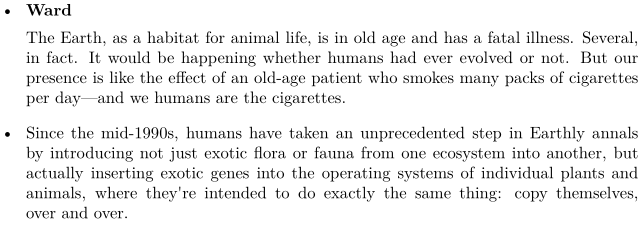

Contents
Summary
The instances of \startitemgroup ... \stopitemgroup typeset a list of items.
Instances
| \startitemize ... \stopitemize |
Settings instance
| \startITEMGROUP[...,...][...=...,...] ... \stopITEMGROUP | |
| [...,...] | inherits from \setupitemgroup |
| ...=...,... | inherits from \setupitemgroup |
Description
The instance environments can be set up globally with e.g.
\setupitemize
. For the arguments available to
\startitemize
and
\setupitemize
, see
\setupitemgroup
.
Examples
Various bullet style demonstration
-
\def\T#1{% \startitemize[#1,joinedup] \item This is a bullet of type #1. \stopitemize } \dorecurse{9}{\T\recurselevel}
Gives:
- 
Altering numbering text
-
\startitemize[n][left=(,right=),stopper=.,distance=2em,] \item Item 1. \item Item 2. \stopitemize
Gives:
- 
Altering vertical space after \head
-
\setupitemize[headstyle=bold,afterhead={\blank[medium]}] \startitemize \starthead{Ward} \input ward \stophead \startitem \input weisman \stopitem \stopitemize
Gives:
- 